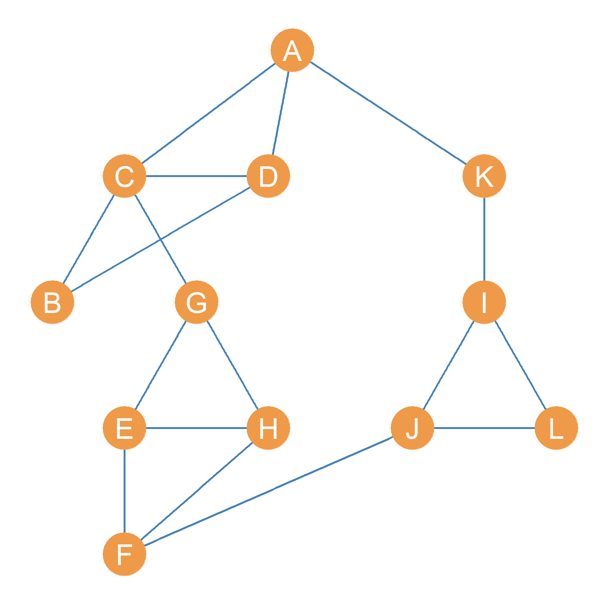
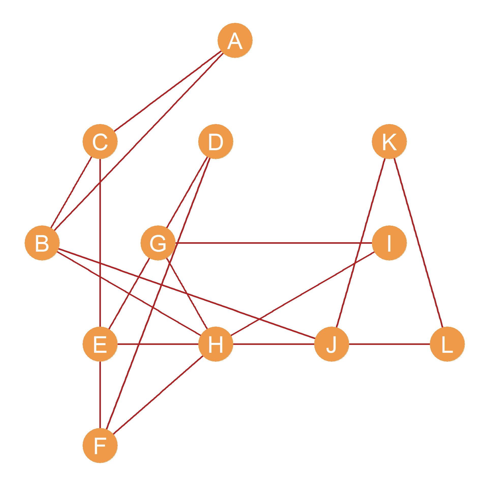
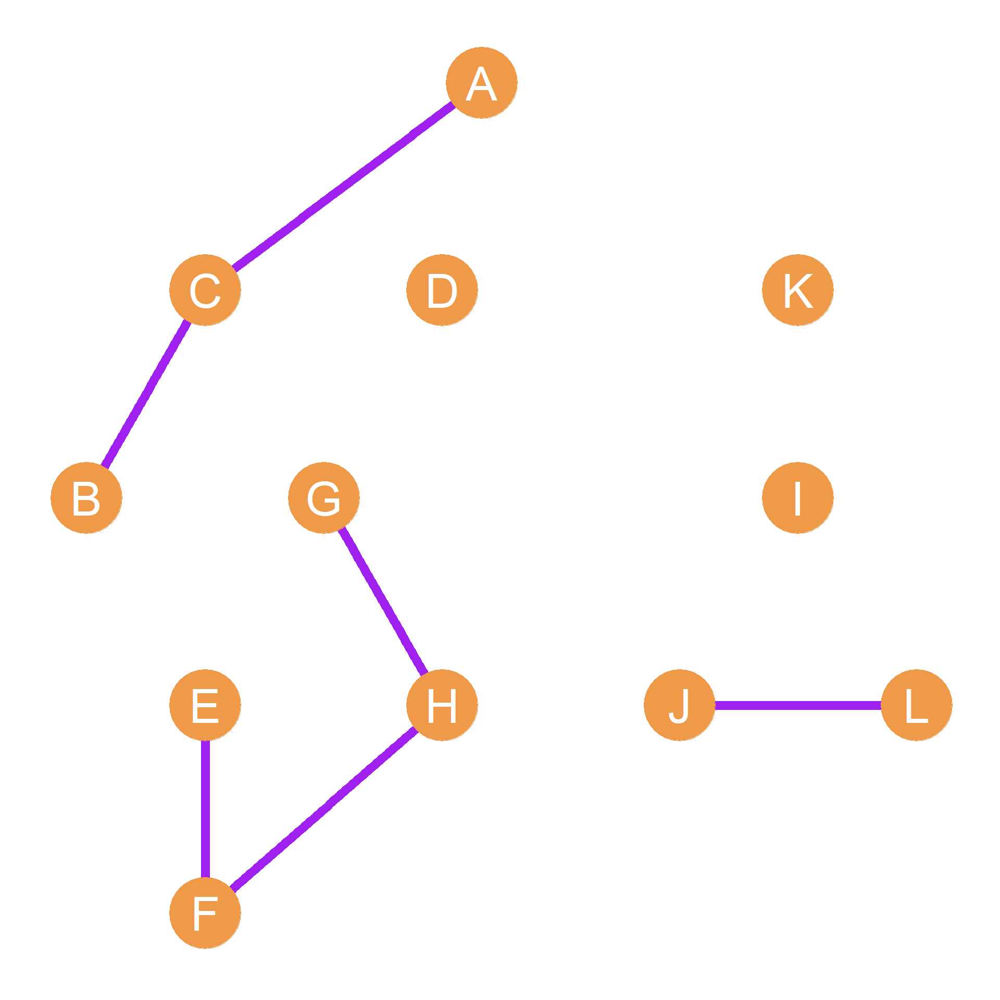

16 Matrix Operations
As we saw in the #sec-grtomat, a matrix is a two-dimensional array of numbers. A matrix is two-dimensional because it arranges numbers according to the intersection of a row dimension and a column dimension. Matrices, therefore are perfect for storing network information, because we can put the nodes in the row and column dimension and then record characteristics of each dyad in the network (like whether they are adjacent in the corresponding graph) in the corresponding cell of the matrix. Recall that each ij cell of a matrix corresponds to the intersection of a particular row object i and a particular column object j, so they are perfect for recording dyadic information. We can of course record all kinds relationships between dyads in matrix form other than adjacency. These include the length of the shortest paths linking two nodes, the number of shortest paths, the number of common neighbors, whether two nodes are reachable from one another, and so forth.



Table 16.1: Adjancency matrices corresponding to networks defined by different relationships.
| A | B | C | D | E | F | G | H | I | J | K | L | |
|---|---|---|---|---|---|---|---|---|---|---|---|---|
| A | -- | 0 | 1 | 1 | 0 | 0 | 0 | 0 | 0 | 0 | 1 | 0 |
| B | 0 | -- | 1 | 1 | 0 | 0 | 0 | 0 | 0 | 0 | 0 | 0 |
| C | 1 | 1 | -- | 1 | 0 | 0 | 1 | 0 | 0 | 0 | 0 | 0 |
| D | 1 | 1 | 1 | -- | 0 | 0 | 0 | 0 | 0 | 0 | 0 | 0 |
| E | 0 | 0 | 0 | 0 | -- | 1 | 1 | 1 | 0 | 0 | 0 | 0 |
| F | 0 | 0 | 0 | 0 | 1 | -- | 0 | 1 | 0 | 1 | 0 | 0 |
| G | 0 | 0 | 1 | 0 | 1 | 0 | -- | 1 | 0 | 0 | 0 | 0 |
| H | 0 | 0 | 0 | 0 | 1 | 1 | 1 | -- | 0 | 0 | 0 | 0 |
| I | 0 | 0 | 0 | 0 | 0 | 0 | 0 | 0 | -- | 1 | 1 | 1 |
| J | 0 | 0 | 0 | 0 | 0 | 1 | 0 | 0 | 1 | -- | 0 | 1 |
| K | 1 | 0 | 0 | 0 | 0 | 0 | 0 | 0 | 1 | 0 | -- | 0 |
| L | 0 | 0 | 0 | 0 | 0 | 0 | 0 | 0 | 1 | 1 | 0 | -- |
| A | B | C | D | E | F | G | H | I | J | K | L | |
|---|---|---|---|---|---|---|---|---|---|---|---|---|
| A | -- | 1 | 1 | 0 | 0 | 0 | 0 | 0 | 0 | 0 | 0 | 0 |
| B | 1 | -- | 1 | 0 | 0 | 0 | 0 | 1 | 0 | 1 | 0 | 0 |
| C | 1 | 1 | -- | 0 | 1 | 0 | 0 | 0 | 0 | 0 | 0 | 0 |
| D | 0 | 0 | 0 | -- | 1 | 1 | 0 | 0 | 0 | 0 | 0 | 0 |
| E | 0 | 0 | 1 | 1 | -- | 1 | 0 | 0 | 0 | 1 | 0 | 0 |
| F | 0 | 0 | 0 | 1 | 1 | -- | 0 | 1 | 0 | 0 | 0 | 0 |
| G | 0 | 0 | 0 | 0 | 0 | 0 | -- | 1 | 1 | 0 | 0 | 0 |
| H | 0 | 1 | 0 | 0 | 0 | 1 | 1 | -- | 1 | 0 | 0 | 1 |
| I | 0 | 0 | 0 | 0 | 0 | 0 | 1 | 1 | -- | 0 | 0 | 0 |
| J | 0 | 1 | 0 | 0 | 1 | 0 | 0 | 0 | 0 | -- | 1 | 1 |
| K | 0 | 0 | 0 | 0 | 0 | 0 | 0 | 0 | 0 | 1 | -- | 1 |
| L | 0 | 0 | 0 | 0 | 0 | 0 | 0 | 1 | 0 | 1 | 1 | -- |
Of course, since matrices are just array of numbers one powerful thing that we can do is arithmetic and algebraic operations on them. These including summing, multiplying, taking powers of matrices and so forth. In this lesson, we discuss some basic matrix operations and their relevance for the analysis of social networks.
Our running example will be the pair of graphs shown in Figure 16.1. Supppose this is a network of twelve people who work at a (very) small company. We have recorded two types of relationships for each pair of persons: Whether they hang out together after work, and whether they get assigned to work together in team projects (we will call these “hang out” and “co-working” relations for short).
Figure 16.1 (a), composed of nodes joined by blue edges, represents hanging out relations; Figure 16.1 (b) represents co-working relations. The corresponding adjacency matrices for the Figure 16.1 networks are shown in Table 16.1. Table 16.1 (a) (let’s call it \(\mathbf{H}\)) records hanging out relations and Table 16.1 (b) (let’s call it \(\mathbf{C}\)) records co-working relations.
16.1 Matrix Addition
Perhaps the simplest operation we can do with matrices is add them up. To add two matrices, we simply add up the corresponding entries in each cell. In matrix notation:
\[ \mathbf{H} + \mathbf{C} = h_{ij} + c_{ij} \tag{16.1}\]
Where \(h_{ij}\) is the corresponding entry for nodes i and j in the hanging out adjacency matrix \(\mathbf{H}\), and \(c_{ij}\) is the same entry in the co-working adjacency matrix \(\mathbf{C}\).
Why would we want to do this? Well, if we were studying the network shown in Figure 16.1, we might be interested in which dyads have uniplex (or single-stranded) relations, and which ones have multiplex (or multi-stranded) relations. That is, while some actors in the network either hang out together or work together, some of the do both. Adding up the adjacency matrices shown in Table 16.1, will tell us who these are. The result is shown in Table 16.2.
| A | B | C | D | E | F | G | H | I | J | K | L | |
|---|---|---|---|---|---|---|---|---|---|---|---|---|
| A | -- | 1 | 2 | 1 | 0 | 0 | 0 | 0 | 0 | 0 | 1 | 0 |
| B | 1 | -- | 2 | 1 | 0 | 0 | 0 | 1 | 0 | 1 | 0 | 0 |
| C | 2 | 2 | -- | 1 | 1 | 0 | 1 | 0 | 0 | 0 | 0 | 0 |
| D | 1 | 1 | 1 | -- | 1 | 1 | 0 | 0 | 0 | 0 | 0 | 0 |
| E | 0 | 0 | 1 | 1 | -- | 2 | 1 | 1 | 0 | 1 | 0 | 0 |
| F | 0 | 0 | 0 | 1 | 2 | -- | 0 | 2 | 0 | 1 | 0 | 0 |
| G | 0 | 0 | 1 | 0 | 1 | 0 | -- | 2 | 1 | 0 | 0 | 0 |
| H | 0 | 1 | 0 | 0 | 1 | 2 | 2 | -- | 1 | 0 | 0 | 1 |
| I | 0 | 0 | 0 | 0 | 0 | 0 | 1 | 1 | -- | 1 | 1 | 1 |
| J | 0 | 1 | 0 | 0 | 1 | 1 | 0 | 0 | 1 | -- | 1 | 2 |
| K | 1 | 0 | 0 | 0 | 0 | 0 | 0 | 0 | 1 | 1 | -- | 1 |
| L | 0 | 0 | 0 | 0 | 0 | 0 | 0 | 1 | 1 | 2 | 1 | -- |
Table 16.2 shows that the \(BC\) dyad has a multiplex relation (there is a “2” in the corresponding cell entry) and so does the \(AC\), \(FH\), \(GH\), \(EF\), and \(JL\) dyads.
16.2 The Matrix Dot Product
Another way of figuring out which pairs of people in a network have multiplex ties is to compute the matrix dot product (symbol: \(\cdot\)). Just like matrix addition, we find the matrix dot product by multiplying the corresponding entries in each of the matrices. In matrix format:
\[ \mathbf{H} \mathbf{\cdot} \mathbf{C} = h_{ij} \times c_{ij} \tag{16.2}\]
If we take the dot product of two adjacency matrices like \(\mathbf{H}\) and \(\mathbf{C}\), then the resulting matrix will have a one in a given cell only if \(h_{ij} = 1\) and \(c_{ij} = 1\). Otherwise, it will have a zero. This means that the dot product of two adjacency matrices will retain only the multiplex ties and erase all the other ones. The result of the dot products of the adjancency matrices shown in Table 16.1 is shown in Table 16.3.
| A | B | C | D | E | F | G | H | I | J | K | L | |
|---|---|---|---|---|---|---|---|---|---|---|---|---|
| A | -- | 0 | 1 | 0 | 0 | 0 | 0 | 0 | 0 | 0 | 0 | 0 |
| B | 0 | -- | 1 | 0 | 0 | 0 | 0 | 0 | 0 | 0 | 0 | 0 |
| C | 1 | 1 | -- | 0 | 0 | 0 | 0 | 0 | 0 | 0 | 0 | 0 |
| D | 0 | 0 | 0 | -- | 0 | 0 | 0 | 0 | 0 | 0 | 0 | 0 |
| E | 0 | 0 | 0 | 0 | -- | 1 | 0 | 0 | 0 | 0 | 0 | 0 |
| F | 0 | 0 | 0 | 0 | 1 | -- | 0 | 1 | 0 | 0 | 0 | 0 |
| G | 0 | 0 | 0 | 0 | 0 | 0 | -- | 1 | 0 | 0 | 0 | 0 |
| H | 0 | 0 | 0 | 0 | 0 | 1 | 1 | -- | 0 | 0 | 0 | 0 |
| I | 0 | 0 | 0 | 0 | 0 | 0 | 0 | 0 | -- | 0 | 0 | 0 |
| J | 0 | 0 | 0 | 0 | 0 | 0 | 0 | 0 | 0 | -- | 0 | 1 |
| K | 0 | 0 | 0 | 0 | 0 | 0 | 0 | 0 | 0 | 0 | -- | 0 |
| L | 0 | 0 | 0 | 0 | 0 | 0 | 0 | 0 | 0 | 1 | 0 | -- |
As we can see, the only dyads that have non-zero entries in Table 16.3 are the multiplex dyads in Table 16.2. The resulting network, composed of the combined “hanging + co-working” relation is shown in Figure 16.1 (c). Note that this network is much more sparse than either of the other two, since there’s an edge between nodes only when they are adjacent in both the Figure 16.1 (a) and Figure 16.1 (b) networks.
16.3 The Matrix Transpose
One thing we can do with a matrix is “turn it 90 degrees” so that the rows of the new matrix are equal to the columns of the resulting matrix and the columns of the first matrix equal the rows of the resulting matrix. This is called the matrix transpose (symbol: \(^T\)).
For instance, if we have a matrix \(\mathbf{A}_{4 \times 5}\) of dimensions \(4 \times 5\) (four rows and five columns), then the transpose \(A^T_{5 \times 4}\) will have five rows and four columns, with the respective entries in each matrix given by the formula:
\[ a_{ij} = a^T_{ji} \] That is the number that in the first matrix appears in the \(i^{th}\) row and \(j^{th}\) column now appears in the transposed version of the matrix in the \(j^{th}\) row and \(i^{th}\) column.
An example of a matrix and its tranpose is shown in Table 16.4.
Table 16.4: A matrix and its transpose
| 3 | 4 | 5 |
| 7 | 9 | 3 |
| 4 | 6 | 2 |
| 5 | 3 | 4 |
| 2 | 5 | 4 |
| 3 | 7 | 4 | 5 | 2 |
| 4 | 9 | 6 | 3 | 5 |
| 5 | 3 | 2 | 4 | 4 |
So let’s check out how the transpose works. The original matrix in Table 16.4 (a) has five rows and three columns. The transposed matrix has three rows and five columns. We can find the same numbers in the original and transposed matrices by switching the rows and columns. Thus, in the original matrix, the number in third row and second column is a six (\(a_{32} = 6\)). In the transposed version of the matrix, that same six is in second row and third column (\(a^T_{23} = 6\)). If you check, you’ll see that’s the case for each number! Thus, the transposed version of a matrix has the same information as the original, it is just that the rows and columns are switched. While this might seem like a totally useless thing to do (or learn) at the moment, we will see in Chapter 18 that the matrix transpose comes in very handy in the analysis of social networks, and particular in the analysis of two mode networks and cliques.
16.4 Matrix Multiplication
Matrix multiplication (symbol: \(\times\)) is perhaps the more complex of the matrix algebra operations we will cover. It is a bit involved, but relatively easy once you get the hang of it. We will begin with a simple example before doing more complicated stuff.
16.4.1 Matrix Multiplication Rules
First, we will let out the basic rules of matrix multiplication:
- You can always multiply two matrices as long as the number of columns of the first matrix equal the rows of the second matrix. To check whether this is the case, all you have to do is put the two matrices side by side and list their dimensions.
\[ \mathbf{A}_{3 \times \mathbf{5}} \times \mathbf{B}_{\mathbf{5} \times 6} \] - The two little “fives” in bold are called the inner dimensions of the two matrices. The little “three” on the left and the little “six” on the right are called the outer dimensions. So another way of stating the first rule of matrix multiplication is that the product of two matrices is defined as long as their inner dimensions equal to one another when you line them up from left to right.
When the number of columns of a matrix equal the number of rows of another matrix so that their inner dimensions match we say that the the two matrices are conformable. When this is not the case, we say the matrices are non-conformable.
Thus, another way of stating the first rule is that only the product of conformable matrices is defined. If the matrices are not conformable then their product is not defined (e.g., there is no answer to the question of what we get if we multiply them!).
This means that unlike numbers or the matrix dot product, where the order of the two things you are multiplying doesn’t matter (\(4 \times 3 = 3 \times 4\) or \(\mathbf{A} \cdot \mathbf{B} = \mathbf{B} \cdot \mathbf{A}\)), in matrix multiplication it does matter. Alas, for any two matrices \(\mathbf{A}\) and \(\mathbf{B}\),
\[ \mathbf{A} \times \mathbf{B} \neq \mathbf{B} \times \mathbf{A} \]
- When you multiply a matrix times another matrix, the resulting matrix will have number of rows equal to the number of rows of the first matrix and number of columns equal to the number of columns of the second matrix. Thus:
\[ \mathbf{A}_{3 \times \mathbf{5}} \times \mathbf{B}_{\mathbf{5} \times 6} = \mathbf{C}_{3 \times 6} \tag{16.3}\]
- Equation 16.3 says that the product of a three by five matrix \(\mathbf{A}\) (three rows and five columns) times a five by six matrix \(\mathbf{B}\) (five rows and six columns) is a third matrix \(\mathbf{C}\) with three rows and six columns. Another way of saying this last rule is that the product of two conformable matrices will have dimensions equal to their outer dimensions.
16.4.2 Multiplying a Matrix Times its Transpose
- By definition, as discussed in Section 16.4.2, the rows of a matrix are equal to the columns of its transpose, and vice versa. The product of a matrix times its transpose and the transpose times the original matrix is always defined, no matter what the dimensions of the original matrix are. Thus,
\[ \mathbf{A} \times \mathbf{A}^T = defined! \]
\[ \mathbf{A}^T \times \mathbf{A} = defined! \]
- When you multiply a matrix times its transpose, the resulting matrix will be a square matrix with number of rows and columns equal to the number of rows of the original matrix. For instance, say matrix \(\mathbf{A}_{5 \times 3}\) is of dimensions \(5 \times 3\) (like the matrix shown in Table 16.4 (a)). Then its transpose \(A^T_{3 \times 5}\) will be of dimensions \(3 \times 5\) (like the matrix shown in Table 16.4 (b)). That means the product of the matrix times its transpose will be:
\[ \mathbf{A}_{5 \times 3} \times \mathbf{A}_{3 \times 5}^T = \mathbf{B}_{5 \times 5} \tag{16.4}\]
- Equation 16.4 says that a five by three matrix multiplied by its transposed yields a square matrix \(\mathbf{B}\) of dimensions five by five (a square matrix with five rows and five columns). In the same way,
\[ \mathbf{A}_{3 \times 5}^T \times \mathbf{A}_{5 \times 3} = \mathbf{B}_{3 \times 3} \tag{16.5}\]
- Equation 16.5 says that the transpose of a five by three matrix multiplied by the original yields a product matrix \(\mathbf{B}\) of dimensions three by three (a square matrix with three rows and three columns).
16.4.3 Matrix Powers
- You can multiply a matrix times itself to get matrix powers but only if matrix is a square matrix (has the same number of rows and columns). Thus,
\[ \mathbf{A}^2 = \mathbf{A} \times \mathbf{A} \] \[ \mathbf{A}^3 = \mathbf{A} \times \mathbf{A} \times \mathbf{A} \] \[ \mathbf{A}^4 = \mathbf{A} \times \mathbf{A} \times \mathbf{A} \times \mathbf{A} \] \[ \mathbf{A}^n = \mathbf{A} \times \mathbf{A} \times \mathbf{A} \times \mathbf{A} \ldots \]
For all square matrices \(\mathbf{A}\) of any dimension. Since matrices used to represent social networks, like the adjacency matrix are square matrices, that means that you can always find the powers of an adjacency matrix.
When you multiply a square matrix times another square matrix of the same dimensions, the resulting matrix is of the same dimensions as the original two matrices. Thus,
\[ \mathbf{A}_{5 \times 5} \times \mathbf{A}_{5 \times 5} = \mathbf{A}^2_{5 \times 5} \]
16.5 Matrix Multiplication Examples
Now let’s see some examples of how matrix multiplication works. Table 16.5 shows the result of multiplying the matrix shown in Table 16.4 (a) times its transpose, shown in Table 16.4 (b).
| 50 | 72 | 46 | 47 | 46 |
| 72 | 139 | 88 | 74 | 71 |
| 46 | 88 | 56 | 46 | 46 |
| 47 | 74 | 46 | 50 | 41 |
| 46 | 71 | 46 | 41 | 45 |
Now where the heck did these numbers come from? Don’t panic. We’ll break it down. First, let’s begin with the number \(50\) in cell corresponding to the first row and first column of Table 16.5. To find out where this number came from, let’s look at the first row of Table 16.4 (a), composed of the vector \(\{3, 4, 5\}\), and the first-column of Table 16.4 (b), composed of the same vector \(\{3, 4, 5\}\). Now, the number \(50\) comes from the fact that we multiply each of the corresponding entries of the two vectors, and then add them up, as follows:
\[ (3 \times 3) + (4 \times 4) + (5 \times 5) = 9 + 16 + 25 = 50 \]
Neat! Now let’s see where the number \(74\) in the fourth row and second column of Table 16.5 came from. For that we look at the entries in the fourth row of Table 16.4 (a), composed of the vector \(\{5, 3, 4\}\) and the second column of Table 16.4 (b) composed of the vector \(\{7, 9, 3\}\). Like before, we take the first number of the first vector and multiply it by the first number of the second vector, the second number of the first vector and multiply it by the second number of the second vector, and the third number of the first vector and multiply it by the third number of the second vector and add up the results:
\[ (5 \times 7) + (3 \times 9) + (4 \times 3) = 35 + 27 + 12 = 74 \] And we keep on going like this to get each of the twenty five numbers in Table 16.5 (there are twenty five numbers because Table 16.5 has five rows and five columns and five times five equal twenty five). In general terms, the number in the \(i^{th}\) row and \(j^{th}\) column of Table 16.5 is equal to the sum of the products of the numbers in the \(i^{th}\) row of the Table 16.4 (a) and the \(j^{th}\) column of Table 16.4 (b).
Note that the resulting product matrix shown in Table 16.5 is symmetric. The same numbers that appear in the upper-triangle also appear in the lower triangle, such that \(b_{ij} = b_{ji}\). So once you know the numbers in one of the triangles, you can fill up the numbers in the other one without having to do all the multiplying and adding up!
Now, let’s multiply the matrix in Table 16.4 (b) times the matrix in Table 16.4 (a). As the rules of matrix multiplication show, this will result in a matrix of dimensions \(3 \times 3\) because Table 16.4 (b) has three rows and $tbl-trans-1 has three columns. This is shown in Table 16.6.
| 103 | 124 | 72 |
| 124 | 167 | 91 |
| 72 | 91 | 70 |
Like before, if we want to figure out where the number \(72\) in the third row and first column of Table 16.6 came from, we go to the first row of Table 16.4 (b) composed of the vector \(\{5, 3, 2, 4, 4\}\) and the first column of Table 16.4 (a), composed of the vector \(\{3, 7, 4, 5, 2\}\) match up each number in terms of order, multiplying them and add up the result:
\[ (5 \times 3) + (3 \times 7) + (2 \times 4) + (4 \times 5) + (4 \times 2) = \]
\[ 15 + 21 + 8 + 20 + 8 = 72 \]
Table 16.7: Powers of a matrix.
| 0 | 1 | 0 | 1 |
| 0 | 1 | 1 | 0 |
| 1 | 0 | 1 | 1 |
| 1 | 0 | 1 | 0 |
| 1 | 1 | 2 | 0 |
| 1 | 1 | 2 | 1 |
| 2 | 1 | 2 | 2 |
| 1 | 1 | 1 | 2 |
| 2 | 2 | 3 | 3 |
| 3 | 2 | 4 | 3 |
| 4 | 3 | 5 | 4 |
| 3 | 2 | 4 | 2 |
Matrix powers work the same as regular matrix multiplication, except that we are working on just one matrix not two. So for instance, the number \(2\) in the first row and third column of Table 16.7 (b) comes from the numbers in the first row of Table 16.7 (a) (\(\{0, 1, 0, 1\}\)) and the numbers in the third column of Table 16.7 (a) (\(\{0, 1, 1, 1\}\)). We line them up, multiplying them, and add them:
\[ (0 \times 1) + (1 \times 1) + (0 \times 1) + (1 \times 1) = 0 + 1 + 0 + 1 = 2 \] Since we are working with a binary matrix, the product of each of the cell entries will be either a zero (when at least one of the entries is zero) or a one (when both entries are one).
To get the cubed entries in Table 16.7 (c), we just take Table 16.7 (b) as the first matrix and Table 16.7 (a) as the second matrix, and do matrix multiplication magic. Thus, to get the number \(4\) in the third row and fourth column of Table 16.7 (c), we take the numbers in the third row of Table 16.7 (b) \(\{2, 1, 2, 2\}\) and the numbers in the fourth column of Table 16.7 (a) \(\{1, 0, 1, 0\}\), line them up, multiply them, and add them:
\[ (2 \times 1) + (1 \times 0) + (2 \times 1) + (1 \times 0) = 2 + 0 + 2 + 0 = 4 \]
Pretty easy!
16.6 Matrix Multiplication of Vectors
Recall from ?sec-degset that a vector is a sequence of numbers of a given length. So for instance, the vector \(\mathbf{a} = \{2, 4, 7, 2, 4\}\) is a vector of length five.
Well, and here comes the big reveal, it turns out that another way to think of a vector, is as a special case of matrix. That is, a matrix with one row, and as many columns as the length of the vector! This is a called a row vector. So the row vector \(\mathbf{a}\) vector can be thought of as a matrix of dimensions \(1 \times 5\) (one row and five columns) or \(\mathbf{A}_{1 \times 5}\).
In matrix form:
| 2 | 4 | 7 | 2 | 4 |
Since vectors are matrices, we can perform the same type of matrix operations on them as we did with matrices. For instance, we can compute the transpose of a vector. In the case of \(\mathbf{a}\), the transpose \(\mathbf{a}^T\) is:
| 2 |
| 4 |
| 7 |
| 2 |
| 4 |
The transpose of a row vector is called (you may have guessed) a column vector. The column vector in Table 16.9 is a matrix with five rows and one column.
This also means that the same rules of matrix multiplication apply. For instance, we can always multiply a row vector times a column vector, because it is the equivalent of multypling a matrix times its transpose, and we have already seen in Section 16.4.2, that this can always be done:
\[ \mathbf{a}_{1 \times 5} \times \mathbf{a}^T_{5 \times 1} = b_{1 \times 1} \tag{16.6}\]
Equation 16.7 says that the product of the \(1 \times 5\) row vector \(\mathbf{a}\) times a \(5 \times 1\) column vector \(\mathbf{a}^T\) is a \(1 \times 1\) “matrix” otherwise known as a scalar (that is, a regular old number). We’ve already seen examples of this, because in regular matrix multiplication, each cell of the product matrix is a scalar obtained from multiplying the corresponding terms taken from a row of the first matrix (which is a row vector) times those of the column of the second matrix (which is a column vector).
So in this case this would be:
\[ (2 \times 2) + (4 \times 4) + (7 \times 7) + (2 \times 2) + (4 \times 4) = \]
\[ 4 + 16 + 49 + 4 + 16 = 89 \]
The first rule of vector matrix multiplication is that you can always multiply a row vector times a column vector (even when their entries are not the same) as long as they are the same length (e.g., the number of columns of the row vector equal the number of rows of the column vector).
The second rule of vector matrix multiplication is that when you multiply a row vector times another a column vector the result is always scalar (a single number).
Now notice that if we change the order, and multiply the transpose of a vector times the original? This should be allowed because it conforms to the rules that we have already discussed:
\[ \mathbf{a}^T_{5 \times 1} \times \mathbf{a}_{1 \times 5} = B_{5 \times 5} \tag{16.7}\]
This matrix multiplication is defined because the inner dimensions of the two matrices (the column and row vectors) are the same (one). But note that, according to the rules of matrix multiplication, when you multiply the transpose of a vector times the original, the result is a square matrix, with dimensions \(n \times n\) where \(n\) is the length of the original row vector (the number of columns). In our example if the original vector is \(\mathbf{a} = \{2, 4, 7, 2, 4\}\), then \(\mathbf{a}^T \times \mathbf{a}\) is equal to the matrix shown in Table 16.10.
| 4 | 8 | 14 | 4 | 8 |
| 8 | 16 | 28 | 8 | 16 |
| 14 | 28 | 49 | 14 | 28 |
| 4 | 8 | 14 | 4 | 8 |
| 8 | 16 | 28 | 8 | 16 |
- So, the third and final rule of vector matrix multiplication is that when you multiply a column vector times a row vector of the same length, the result is a square matrix of row and column dimensions equal to the length of the original vectors.
16.7 Multiplying a Vector Times A Matrix (and Vice Versa)
Since vectors are just matrices, it means that we can always multiply a vector times a matrix (and a matrix times a vector), as long as we follow the matrix multiplication rules laid out in Section 16.4.1.
16.7.1 Row Vector Times Matrix
For instance, take the row vector \(\mathbf{b} = \{4, 9, 3, 5\}\) and the binary matrix \(\mathbf{A}\) shown in Table 16.7 (a). Because the row vector \(\mathbf{b}\) is of dimensions \(1 \times 4\) and matrix \(\mathbf{A}\) is of dimensions \(4 \times 4\), it is possible to multiply the vector times the matrix as follows:
\[ \mathbf{b}_{1 \times 4} \times \mathbf{A}_{4 \times 4} = \mathbf{c}_{1 \times 4} \tag{16.8}\]
Equation 16.8 says that the product of a \(1 \times 4\) row vector times a \(4 \times 4\) square matrix is another vector of dimensions equal to the original row vector. The result for this example is shown in Table 16.11.
Table 16.11: Row vector resulting from multiplying a row vector times a square matrix
| 4 | 9 | 3 | 5 |
| 0 | 1 | 0 | 1 |
| 0 | 1 | 1 | 0 |
| 1 | 0 | 1 | 1 |
| 1 | 0 | 1 | 0 |
| 8 | 13 | 17 | 7 |
Of course, it is also possible to multiply a row vector times a rectangular matrix (where the number of rows is not necessarily equal to the number of columns), as long as the number of rows of the rectangular matrix equals the length of the original row vector. For instance, take a row vector \(\mathbf{a}_{1 \times 5}\) shown in Table 16.12 (a) and a matrix \(B_{5 \times 3}\). Its product would be given by:
\[ \mathbf{a}_{1 \times 5} \times \mathbf{B}_{5 \times 3} = \mathbf{c}_{1 \times 3} \tag{16.9}\]
Equation 16.9 says that the product of a row vector of dimensions \(1 \times 5\) and a matrix of dimensions \(5 \times 3\) is another row vector \(\mathbf{c}\) of dimensions (\(1 \times 3\)). A numerical example corresponding to this situation is shown in Table 16.12.
Table 16.12: Row vector resulting from multiplying row vector times a rectangular matrix
| 2 | 4 | 7 | 2 | 4 |
| 2 | 13 | 18 |
| 5 | 4 | 14 |
| 11 | 7 | 1 |
| 15 | 20 | 10 |
| 12 | 16 | 19 |
| 179 | 195 | 195 |
To get the “179” entry in row one and column one of Table 16.12, we take the entries of the row vector shown in Table 16.12 (a) and multiply them by the corresponding entries in the first column of the matrix shown in Table 16.12 (b) and add up the results:
\[ (2 \times 2) + (4 \times 5) + (7 \times 11) + (2 \times 15) + (4 \times 12) = \]
\[ 4 + 20 + 77 + 30 + 48 = 179 \]
And so on for the other two entries in Table 16.12 (c). So the main rule of multiplying a row vector times a matrix with number of rows equal to the length of the row vector is that the result will always be another row vector of length equal to the number of columns of the matrix.
16.7.2 Matrix Times Column Vector
In the same way, we can always multiply a matrix times a column vector, as long as the the number of columns of the matrix is equal to the length of the column vector. For instance, take the binary square matrix \(A_{5 \times 5}\) shown in Table 16.13 (a) and the column vector \(\mathbf{b}_{5 \times 1}\) shown in Table 16.12 (b). Their product \(\mathbf{c}\) would be given by:
\[ \mathbf{A}_{5 \times 5} \times \mathbf{b}_{5 \times 1} = \mathbf{c}_{5 \times 1} \tag{16.10}\]
Equation 16.10 says that the product of a matrix of dimensions \(5 \times 5\) and a column vector of dimensions \(5 \times 1\) is another column vector \(\mathbf{c}\) of dimensions equal to the original column vector (\(5 \times 1\)). A numerical example of this situation is shown in Table 16.13.
Table 16.13: Column vector resulting from multiplying a square matrix times a column vector
| 15 | 16 | 10 | 10 | 1 |
| 3 | 16 | 15 | 3 | 14 |
| 0 | 10 | 17 | 0 | 11 |
| 12 | 16 | 15 | 18 | 4 |
| 9 | 5 | 7 | 7 | 17 |
| 2 |
| 4 |
| 7 |
| 2 |
| 4 |
| 188 |
| 237 |
| 203 |
| 245 |
| 169 |
16.8 Multiplying Matrices Times the All Ones Vector
In matrix multiplication, there is a special row and column vector called the all ones vector. As you may have guessed this is a vector of all ones, of some length \(n\). For instance and all ones row vector of length five is \(\mathbf{1}_{1 \times 5} = \{1, 1, 1, 1, 1\}\) (the symbol for the all ones vector is a boldface “1”). We can also get the transpose of this all ones row vector to get the all ones column vector \(\mathbf{1}^T\).
Why do we care about vectors full of ones? Well, it turns out that the all one row and column vectors have a neat property when we multiplied by matrices. We already know, from the rules of vector matrix multiplication reviewed earlier, that the product of a row vector times a square matrix is always a row vector of the same length as the original, and the product of a square matrix times a column vector is always a column vector of the same length as the original.
Let’s say we a matrix \(\mathbf{A}\) of dimensions \(5 \times 5\), and we multiplied the all ones row vector of length five times this matrix, which would result in the row vector \(\mathbf{b}\). This would be given by the formula:
\[ \mathbf{1}_{1 \times 5} \times \mathbf{A}_{5 \times 5} = b_{1 \times 5} \tag{16.11}\]
A numerical example of the situation depicted in Equation 16.11 is shown in Table 16.14.
Table 16.14: Row vector resulting from multiplying the all ones row vector times a square binary matrix
| 1 | 1 | 1 | 1 | 1 |
| 0 | 1 | 0 | 1 | 0 |
| 1 | 1 | 0 | 1 | 0 |
| 1 | 1 | 1 | 0 | 1 |
| 0 | 1 | 1 | 0 | 0 |
| 1 | 1 | 0 | 1 | 0 |
| 3 | 5 | 2 | 3 | 1 |
If you look at the resulting row vector in Table 16.14 (c), we can see that the result of multiplying the all ones row vector times a matrix is a vector that contains the column sums of the matrix entries! So the “2” in position 1 of Table 16.14 (c) comes from adding up the numbers in the first column of the matrix, the “1” in position 2 of Table 16.14 (c) comes from adding the numbers in the second column and so forth.
Table 16.15: Row vector resulting from multiplying the all ones row vector times a square binary matrix
| 0 | 1 | 0 | 1 | 0 |
| 1 | 1 | 0 | 1 | 0 |
| 1 | 1 | 1 | 0 | 1 |
| 0 | 1 | 1 | 0 | 0 |
| 1 | 1 | 0 | 1 | 0 |
| 1 |
| 1 |
| 1 |
| 1 |
| 1 |
| 2 |
| 3 |
| 4 |
| 2 |
| 3 |
In the same way, if we multiply the same matrix times the all ones column vector, we get the results shown in Table 16.15. We can see that the result of multiplying a matrix times the all ones column vector, is another column vector contains the row sums of the original matrix! So, the “2” in the first position of the column vector comes from adding the numbers in the first row of the matrix, the “3” comes from adding the numbers in the second row, and so forth.
16.9 The Identity Matrix
The last “interesting” matrix we will cover is called the identity matrix. This is a square matrix, usually written using the symbol \(\mathbf{I}\) of dimensions \(n \times n\). This matrix will have “1” in every diagonal cell, and “0” in every off-diagonal cell. For instance, an identity matrix of dimensions \(5 \times 5\) is shown Table 16.16.
| 1 | 0 | 0 | 0 | 0 |
| 0 | 1 | 0 | 0 | 0 |
| 0 | 0 | 1 | 0 | 0 |
| 0 | 0 | 0 | 1 | 0 |
| 0 | 0 | 0 | 0 | 1 |
The interesting thing about this matrix is that when you multiply it times another square matrix of the same dimensions, the result is always the original matrix! So it plays the role that the number “1” plays in regular number multiplication, in matrix algebra. This means that, for any square matrix \(\mathbf{A}\):
\[ \mathbf{A} \times \mathbf{I} = \mathbf{A} \tag{16.12}\]
And also,
\[ \mathbf{I} \times \mathbf{A} = \mathbf{A} \tag{16.13}\] Neat!